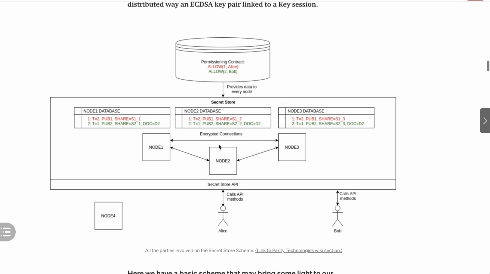

https://github.com/matter-labs/zksync
ZK Rollup https://ethfans.org/posts/zk-rollup-and-optimistic-rollup
- mathchain帮助用户管理密码，帮助用户跨链，自己没有什么主要的业务，主要是用来做链接。
- arc block 只是对于链封装接口，mathchain超越了arc block的新一代
- pocket network主要是对于链的适配，没怎么提到跨链
用户的密码存储
- 秘钥分割
- 以太的分布式节点（分割完了之后还是放在合约里，利用以太的基础设施）
- 秘钥分割，门限签名 和以太坊差不多，秘钥分成三份，放在三个以太坊节点里。
- 用户放在合约里，用户调这个合约
门限签名-以转账举例

- 发请求给contract，想·
1、Hierarchical Deterministic（分层确定性），是一种广泛用于数字货币钱包的加密技术。
分层确定性，简单解释来说就是当钱包生成私钥后, 不直接使用这个私钥存储货币，而是再用一种确定的、不可逆的算法分层演算出更多的子私钥, 这样只需要随机生成一个主私钥, 就能获得无数个子私钥。
2、HD钱包最大的特性就是，可以通过主密钥派生任意数量的子账户(也就是子密钥)。所有的子账户都被主密钥所控制, 而且可以无限扩展。所以用户只需要管理一个主私钥, 就能集中管理账户中的数字货币。
IDO和ICO
ICO
简单来说ICO就是普通人可以参与的，用区块链基础币（如ETH、EOS、BTC）换取项目方发行的token（代币），期待新代币增值获利的一种形式.例如：大家可以用ETH参与EOS的ICO，获得EOS代币。
IDO
IDO是项目方发布悬赏任务，大家用自己的时间、技能等资源完成任务获得项目方奖励的token。
ICO是圈钱发代币，不好听的说法是：被圈的人人傻钱多都想暴富，结果当然99%的项目在割韭菜；
IDO是直接圈人，然后把圈到的人变成投资者+员工+用户